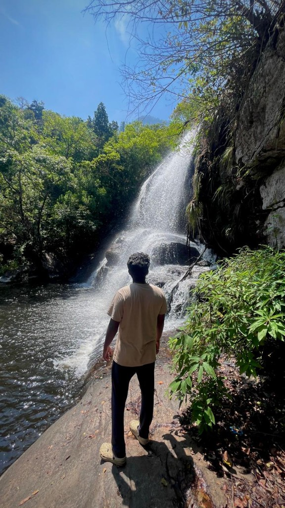

add_photo_alternate
Kodaikanal
Solo Trip
A memorable solo escape into the misty hills — one of my favourite mountain journeys. The road up was slow, scenic, and worth every turn. I will add my personal photos and full story here soon: the viewpoints, the lake air, and the quiet moments that made Kodaikanal stay with me.